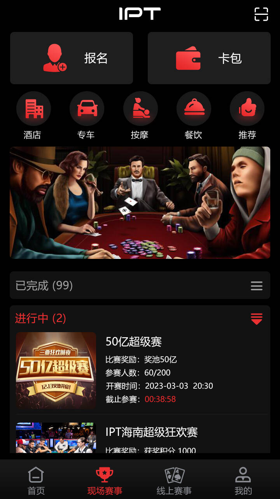
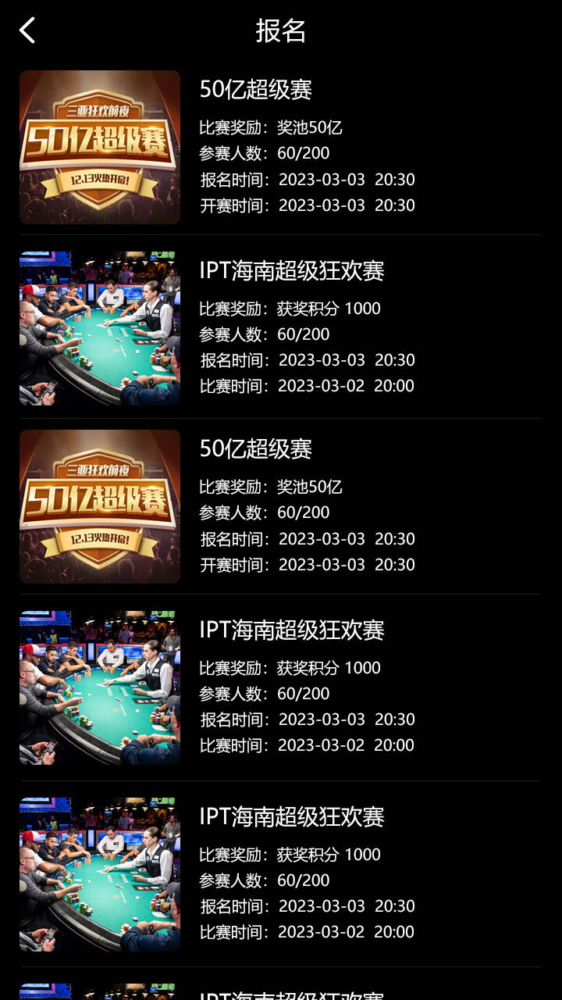
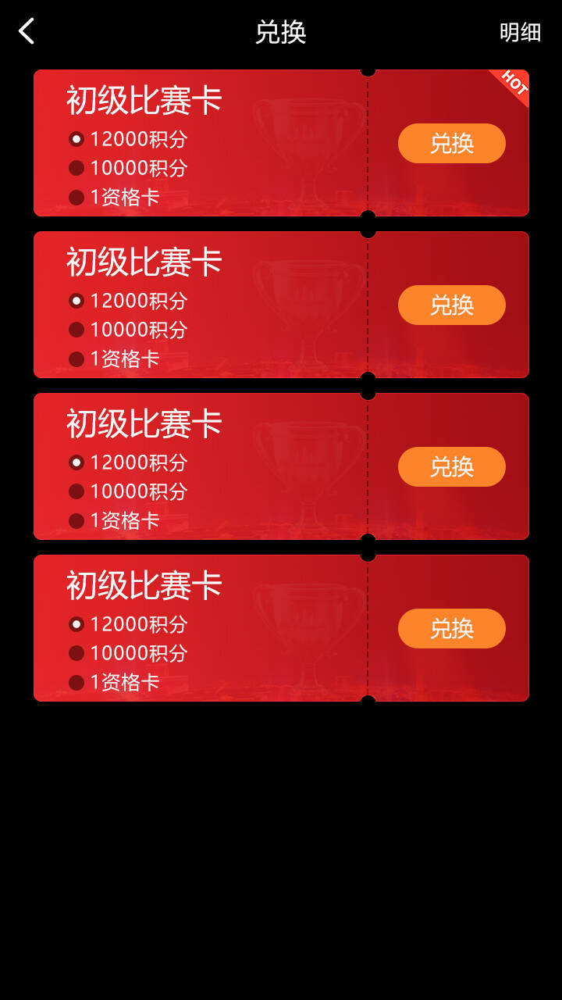

動態賽事排程
支援盲注升級、淘汰、拆桌、併桌、座位平衡與決賽桌流程。
從線上報名、即時牌桌到線下資格核銷，串接完整錦標賽生命週期。
支援盲注升級、淘汰、拆桌、併桌、座位平衡與決賽桌流程。
可設定參賽人數、起始籌碼、盲注速度和獎勵名次。
管理週期排行榜、晉級條件和線上賽事資格。
取得明確同意後串接活體檢測和參賽身分確認。
將線上成績連接到門票領取、資格審核和現場核銷。
集中管理賽事、使用者、排名、門票、權限和稽核記錄。
客戶端顯示、即時遊戲邏輯和營運管理相互分離，方便獨立演進和安全控制。
賽事大廳、報名、牌桌、排名、個人中心和門票狀態。
發牌、行動驗證、狀態同步、賽事排程、淘汰和結算。
賽事設定、身分審核、資格管理、門票核銷和風控稽核。
涵蓋玩家從發現賽事到取得比賽結果或線下參賽資格的主要階段。
展示現場賽事大廳、比賽報名、競技牌桌和比賽資格卡兌換介面。



